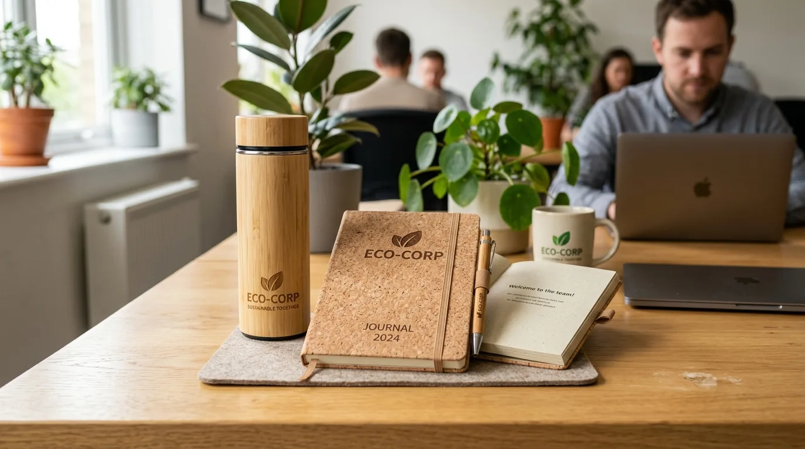
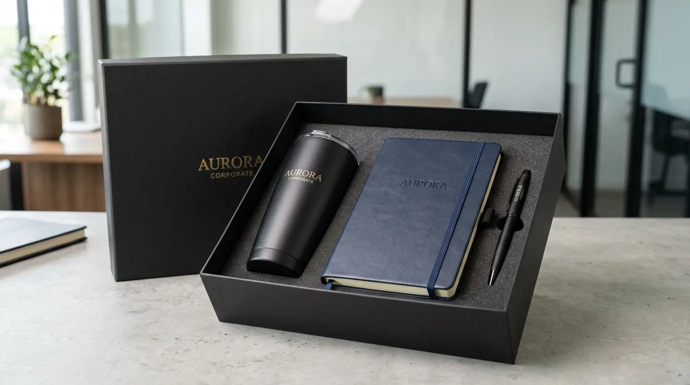

Souvenir Kantor untuk Klien dan Karyawan Memiliki Tujuan yang Berbeda
 Ardhana Prasasta (haw)
10 Agustus 2026
4 Menit Baca
Ardhana Prasasta (haw)
10 Agustus 2026
4 Menit Baca

Souvenir kantor untuk klien dan karyawan sebenarnya melayani dua tujuan komunikasi yang berbeda meski sama-sama berasal dari satu perusahaan. Souvenir untuk klien umumnya difokuskan pada penguatan citra profesional dan hubungan bisnis jangka panjang, sedangkan souvenir untuk karyawan lebih menekankan pada apresiasi dan penguatan budaya kerja internal. Memahami perbedaan ini membantu perusahaan menentukan jenis, kualitas, dan pesan yang tepat pada setiap souvenir yang dibagikan.
Souvenir kantor untuk klien dan karyawan sebenarnya melayani dua tujuan komunikasi yang berbeda meski sama-sama berasal dari satu perusahaan. Souvenir untuk klien umumnya difokuskan pada penguatan citra profesional dan hubungan bisnis jangka panjang, sedangkan souvenir untuk karyawan lebih menekankan pada apresiasi dan penguatan budaya kerja internal. Memahami perbedaan ini membantu perusahaan menentukan jenis, kualitas, dan pesan yang tepat pada setiap souvenir yang dibagikan.
Mengapa Tujuan Pemberian Souvenir Menentukan Jenis Barang yang Dipilih
Souvenir yang diberikan kepada klien biasanya mewakili citra perusahaan di mata pihak eksternal, sehingga kesan eksklusif dan kualitas premium menjadi pertimbangan utama. Barang seperti set alat tulis elegan, hampers eksekutif, atau tas kerja berbahan berkualitas sering dipilih karena mampu mencerminkan level profesionalisme perusahaan kepada mitra bisnis atau calon klien.

Berbeda halnya dengan souvenir untuk karyawan, yang lebih menitikberatkan pada sisi kedekatan emosional dan fungsi sehari-hari. Barang-barang seperti tumbler, jaket kerja, atau perlengkapan meja kerja lebih dipilih karena sifatnya yang dapat digunakan rutin, sehingga menumbuhkan rasa nyaman dan keterikatan karyawan dengan lingkungan kerjanya.
Peran Souvenir Klien dalam Memperkuat Hubungan Bisnis
Dalam konteks bisnis, souvenir yang diberikan kepada klien sering menjadi bagian dari strategi menjaga hubungan pasca transaksi maupun sebagai bentuk penyambutan kerja sama baru. Kesan pertama yang muncul dari kualitas dan tampilan souvenir dapat memengaruhi persepsi klien terhadap keseriusan dan kredibilitas perusahaan.
Souvenir untuk klien idealnya dipilih dengan mempertimbangkan kesan formal namun tetap berkesan personal, misalnya dengan sentuhan kemasan yang rapi dan detail presentasi yang matang. Hal-hal kecil seperti kartu ucapan yang menyertai souvenir juga dapat memperkuat kesan bahwa hubungan bisnis tersebut dihargai secara tulus, bukan sekadar formalitas administratif.
Peran Souvenir Karyawan dalam Membangun Budaya Kerja
Sementara itu, souvenir untuk karyawan berperan penting dalam membangun rasa memiliki terhadap perusahaan. Pemberian souvenir pada momen tertentu, seperti pencapaian target kerja, hari jadi perusahaan, atau perayaan hari besar, menjadi bentuk komunikasi non-verbal bahwa kontribusi karyawan diperhatikan dan dihargai oleh manajemen.
Souvenir internal yang dipilih dengan tepat, baik dari segi fungsi maupun desain, cenderung lebih sering digunakan dalam aktivitas kerja sehari-hari. Penggunaan yang berulang ini pada akhirnya turut memperkuat rasa kebersamaan antar karyawan sekaligus menegaskan identitas perusahaan sebagai satu kesatuan tim.
Menyesuaikan Anggaran dan Kualitas Berdasarkan Penerima
Perbedaan tujuan antara souvenir klien dan karyawan juga berdampak pada alokasi anggaran perusahaan. Souvenir untuk klien strategis atau mitra bisnis penting biasanya dialokasikan dengan standar kualitas lebih tinggi karena berkaitan langsung dengan nilai kerja sama yang sedang dijaga. Sementara souvenir karyawan dapat disesuaikan dengan skala pemberian yang lebih merata, mengingat jumlah penerimanya umumnya lebih banyak.
Untuk Klien
Kualitas premium, kemasan formal, kesan eksklusif, dan personalisasi yang matang.
Untuk Karyawan
Fungsional, penggunaan sehari-hari, apresiasi, dan penguatan budaya kerja.
Penyesuaian ini bukan berarti mengurangi kualitas souvenir karyawan, melainkan menyesuaikan jenis barang agar tetap relevan dengan kebutuhan harian mereka tanpa mengorbankan nilai apresiasi yang ingin disampaikan perusahaan.
Butuh Souvenir untuk Klien atau Karyawan?
Konsultasikan kebutuhan souvenir kantor untuk klien maupun karyawan dengan tim kami untuk mendapatkan rekomendasi produk terbaik.
Konsultasi SekarangKesimpulan
Memahami perbedaan tujuan souvenir untuk klien dan karyawan adalah langkah penting dalam merancang strategi pemberian souvenir yang efektif. Souvenir untuk klien berfungsi sebagai representasi citra profesional dan penguat hubungan bisnis, sementara souvenir untuk karyawan berperan dalam membangun budaya kerja dan rasa memiliki. Dengan menyesuaikan jenis, kualitas, dan pesan yang disampaikan, perusahaan dapat memaksimalkan dampak dari setiap souvenir yang diberikan kepada kedua kelompok penerima tersebut.
Pertanyaan Seputar Souvenir Kantor untuk Klien dan Karyawan